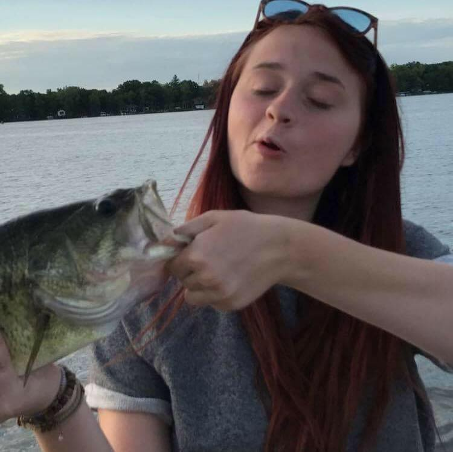

Home Venison Pot Pie Salmon Burgers Bhudda Bowls
Hi! I'm Kirby (alias Korb, Kirb, or Kirbance).
Since moving to Alaska 4 years ago, I've adopted what locals jokingly call an "Alaskatarian" diet. Essentially, I'm a dirty shoeless environmentalist who does her damndest to eat sustainable foods. Generally, that's vegetarianism. Sometimes, it's fish. And when I can get my hands on it -- hunted meat. At first, the diet felt restrictive, but now it seems there's not much at all I'm missing out on. Check out a few of my favorite recipes since adopting the Alaskatarian lifestyle.
